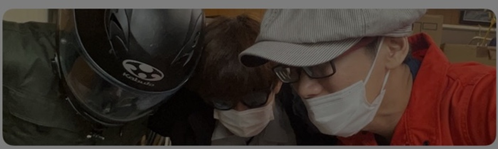
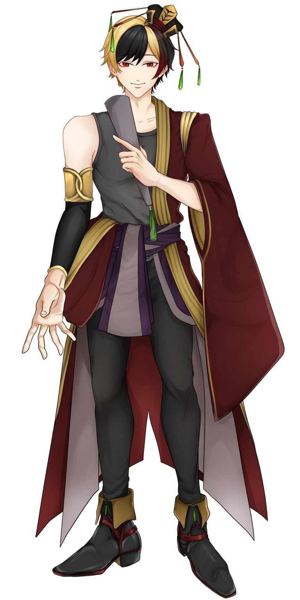
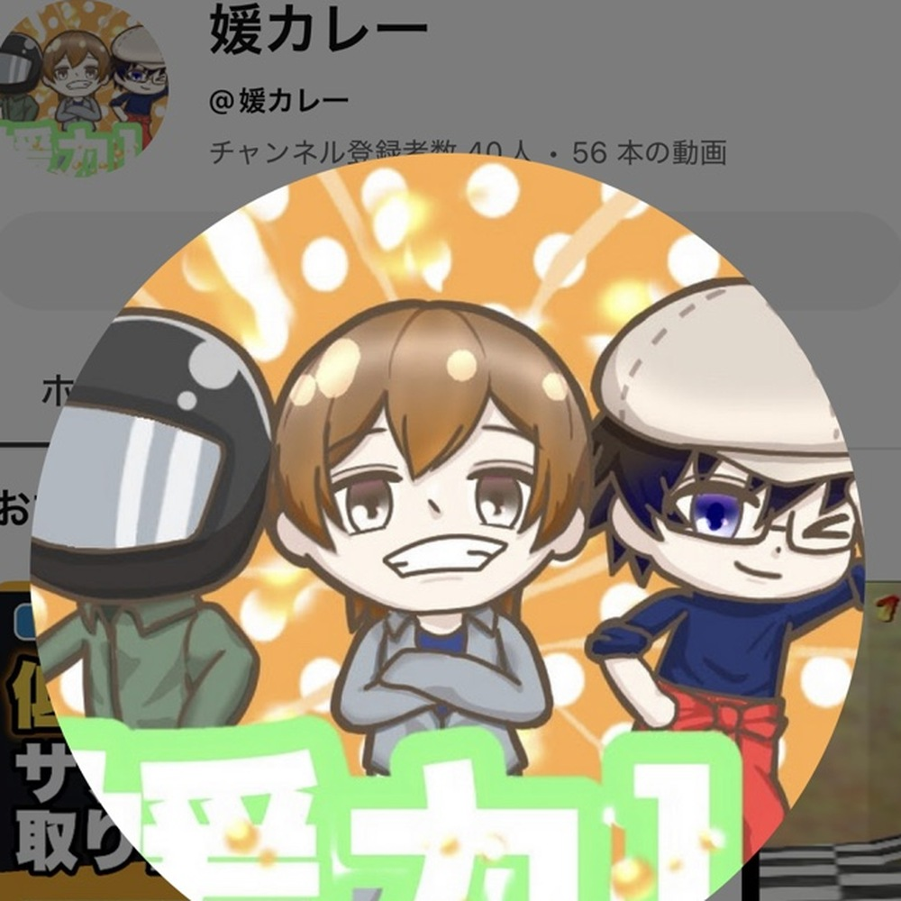

2.8D CREATOR GROUP
媛カレー × V-RE:DUO
ゲーム実況、雑談、踊ってみたなど、幅広いジャンルで活動する3人組配信グループ。
SHUN左・ヘルメット
乙都呂赦中央
雲黒斎右・メガネ／通称クモ
VIRTUAL RADIO IS LIVE
配信者とリスナーを、もっと近くへ。
Virtual × Radio × DUOから生まれる、新しいエンターテインメント。

01 / FEATURED COLLABORATORS

2.8D CREATOR GROUP
ゲーム実況、雑談、踊ってみたなど、幅広いジャンルで活動する3人組配信グループ。
02 / ABOUT
OUR PHILOSOPHY
V-RE:DUO（ブイレデュオ）は、バーチャルの世界でラジオのように身近で、誰でも気軽に耳を傾けられる存在を目指すクリエイターグループです。
YouTube配信者、バーチャル配信者、音楽配信者の個性を尊重し、企画・コラボ・発信を通して新しい表現を支えます。
現在はグループとして活動しながら、将来は配信者が安心して挑戦できる事務所へ成長していきます。
所属・活動ライバー
企画・コラボ実績
公式マスコット
SNS総フォロワー
03 / MEMBER
OUR CREATORS
個性豊かな配信者たちが、あなたの日常をもっと楽しく。

01IRIAM LIVER / TALK
閻魔代理を務めながら、現世では自動車整備士として働く男性ライバー。
 02
02IRIAM / V-RAPPER
言葉とリズムで想いを届けるVラッパー。YouTubeでは作詞した楽曲を公開予定。

NEWYOUTUBE GROUP / 2.8D
乙都呂赦・SHUN・雲黒斎の3人からなる2.8次元配信グループ。
新しいライバーが加入予定！
04 / MASCOT

OFFICIAL MASCOTS
元気に声を届ける、小柄なハムスター。マイクとON AIRを担当するムードメーカー。
ラジオを抱えたラッコ。配信者とリスナーをそっと結ぶナビゲーター。
05 / NEWS
LATEST UPDATES
06 / RECRUIT
JOIN V-RE:DUO
ライバー、VTuber、Vラッパー、動画編集、イラスト、Live2D、MV制作など、一緒に活動する仲間を募集しています。
07 / CONTACT